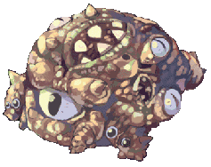
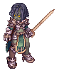
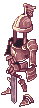

Old Glast Heim
- For the possible destination for Weekly Quests' Monster Subjugation or Item Hunt, see Abyss Glast Heim. For other uses, see Glast Heim.
| This quest or instance is repeatable. | |||
|---|---|---|---|
| Difficulty | Cooldown | Tickets Available | |
|
Normal |
Resets at 0:00 |
Solo: 2 | Party: 2 |
|
Hard |
Resets at 0:00 |
Solo: 2 | Party: 2 |
Introduction
| Requirements | |
|---|---|
| Base Level: | 130 |
| Starting Point: | glast_01 204/273 |
| Items: | - |
| Rewards | |
| Experience: | - |
| Items: | Temporal Crystals
Ability to make Temporal Boots |
Old Glast Heim is one of the available Instances in NovaRO. It is a dungeon where you travel back in time to aid Hugin and the Glast Heim Royal Knights in thwarting the plans of evil valkyrie Himmelmez.
There are 2 modes of difficulty for this instance. In Normal mode, monsters will drop Coagulated Spells. In Hard mode, monsters will have higher HP and stronger attacks, but will drop the more valuable Contaminated Magic. Additionally, you will also have a chance of receiving 1-4 extra temporal crystals as compared to normal mode. Monster Information can be found in the final section of this guide.
Old Glast Heim is the only source of Temporal Crystals, Coagulated Spells and Contaminated Magic. All three reagents are used in creating/enchanting Temporal Boots. Temporal Boots combos with Giant Snake Skin to give one of the strongest sets while also providing powerful stats on its own.
The Holy element is most effective in this instance, therefore it is recommended to have an Arch Bishop in your party to cast Aspersio. For new players, it is also recommended to bring Yggdrasil Leaf and Token of Siegfried in case your party runs out of tickets.
You have 1 hour to finish this instance, and if you or your party member happens to log out or teleport out of the instance, your party is allowed 2 chances to re-enter.
New Cards
With enough Coagulated Spells and Contaminated Magics, you can buy two new cards from the Portrait Collector. /navi glast_01 196/273
- White Knight Card: 6000 Coagulated Spell OR 700 Contaminated Magic
- Khalitzburg Knight Card: 10000 Coagulated Spell OR 1000 Contaminated Magic
Walkthrough
Level 1
- To enter this instance, talk to the Warper NPC and select Instances: Old Glast Heim.
- Talk to Hugins
/navi glast_01 204/273, the party leader has to select the difficulty and generate the instance. Speak to him a 2nd time to enter the instance.- Your party is allowed 2 re-enter tickets for players who happen to log out or teleport out of the instance. After the two tickets are used up, you will not be able to re-enter the instance.
- After entering the instance, the party leader needs to speak to Varmunt, he will warn you about valkyrie Himelmez.
- Head north and speak to Heinrich
green square. This will trigger a dialogue between Heinrich and Himelmez. - After their conversation, Corrupted Abysmal Knight and Suffering Khalitzburg will spawn. Heinrich will kill them after some time but it is recommended to kill them for Coagulated Spells and Contaminated Magic.
- A warp will activate at the west
left yellow square, enter it and start killing monsters until a message "Himelmez drains the souls of the dead" appears. Party leader then has to speak to Butcherleft purple square.- Using the right camera angle, it is possible to speak with the butcher through the wall, saving you the hassle of having to run to him.
- Another warp
right yellow squarewill spawn, enter it. Avoid going near the dead body as it will spawn a swarm of Maggot. - Start clearing monsters until the message of "Himelmez drains the souls of the dead" appears. The party leader then has to speak with Blacksmith
right purple squarein order to proceed. - Enter the warp
upper yellow squarethat spawned and continue to clear mobs. Once enough mobs has been cleared, Himelmez, Varmundt and Hienrich will all spawn atred square. - Once the NPCs finish their conversation, Root of Corruption will spawn.
- Please take note that you will have to be in the same screen as the MVP as it dies or you will not receive credit for the kill.
- After killing the MVP, ALL party members MUST speak to Varmundt
red squareto receive 1X Temporal Crystals. You will be unable to receive the final reward of the instance if you do not speak with him.
Level 2
- Head north and enter level 2 where you will find Varmundt and Heinrich. After their conversation, a warp
left yellow squarewill spawn to the north of them. Enter it and start to kill monsters. Once enough monsters have been slain, Agony of the Royal Knight will spawn. You will need to kill him to proceed. - Exit the room and enter the warp on the right
right yellow square. Start killing monsters until Grudge of the Royal Knight spawn. Kill him to proceed. - Head north and prepare for the final encounter.
- Do note that you will be unable to exit the room once you entered until either your party has wiped or the final MVP is killed. It is advisable to ensure everyone is alive and ready to enter before going in.
- Head further north after entering the warp
upper yellow squareand speak to Heinrichred square. Himelmez will transform the final survivor into Amdarais. - Upon killing Amdarais, Hugin
/navi [email protected]_k 158/241will spawn in the middle of the room. Speak to him to receive Temporal Crystals. - At this point the instance is completed, however there is a secret room where you can get additional loot in level 1. Head back to level one and enter the secret room by talking to the fountain
/navi [email protected]_k 268/268. In the secret room, talk to the glass displays/navi [email protected]_k 170/136to unlock the treasure and profit.
Monsters Info
| Image | Name | HP (Normal) | HP (Hard) | Race | Element |
|---|---|---|---|---|---|

|
Amdarais | 4,290,000 | 42,900,000 | Undead | Undead 4 |
|  | Root of Corruption | 1,820,000 | 18,200,000 | Demon | Earth 3 |
|  | Grudge of the Royal Knight | 848,011 | 1,696,020 | Undead | Undead 2 |

|
Agony of the Royal Knight | 950,033 | 1,900,070 | Undead | Undead 2 |
|  | Corrupted Palace Guard | 184,080 | 368,160 | Undead | Dark 2 |

|
Wandering Archer | 144,370 | 288,740 | Undead | Dark 2 |

|
Corrupted Abysmal Knight | 225,789 | 451,578 | Undead | Dark 4 |

|
Bloody Knight | 246,751 | 493,502 | Undead | Dark 4 |

|
Suffering Khalitzburg | 219,275 | 473,702 | Undead | Undead 1 |

|
Corrupted Monk | 100,168 | 200,336 | Undead | Undead 4 |

|
Grand Chamberlain in Pain | 208,100 | 416,200 | Undead | Undead 2 |

|
Corrupted Steward | 135,600 | 271,200 | Undead | Undead 1 |
| Maggot | 80,811 | 161,622 | Insect | Earth 2 |
Cards
The following cards are obtainable from monsters in Old Glast Heim instance.
| Card | Type | Description |
|---|---|---|
| Armor Card | MaxHP -44%.
When killing monsters using physical attacks, recover 200 HP. Every refine level, increase HP recovered by 10. When the armor is unequipped, drain 4444 HP. If equipped with Grudge of Royal Knight Card, increase resistance against Neutral property attacks by 20%, Flee +20, lose 100 HP and 6 SP every 6 seconds. | |
| Garment Card | MaxSP -44%.
When killing monsters using physical attacks, recover 20 SP. Every refine level, increase SP recovered by 10. When the garment is unequipped, drain 444 SP. If equipped with Agony of Royal Knight Card, increase resistance against Neutral property attacks by 20%, Flee +20, lose 100 HP and 6 SP every 6 seconds. | |
| Weapon Card | ATK +20.
When using melee physical attacks, has a high chance to autocast Petrification, Sleep, and Curse on all monsters in 5x5 AoE centered around the wearer. | |
| Armor Card | ATK +15%, MATK +15%. Every 4 seconds, lose 666 HP and 66 SP.
When the armor is unequipped, drain 6666 HP and 666 SP. | |
| Weapon Card | ATK +30.
When using melee physical attacks, has a high chance to autocast Petrification, Sleep, and Curse on all monsters in 11x11 AoE centered around the wearer. | |
| Armor Card | ATK +20%, MATK +20%.
Every 6 seconds, lose 666 HP and 66 SP. When the armor is unequipped, drain 6666 HP and 666 SP. |
Equipment
Main Article: Temporal Boots